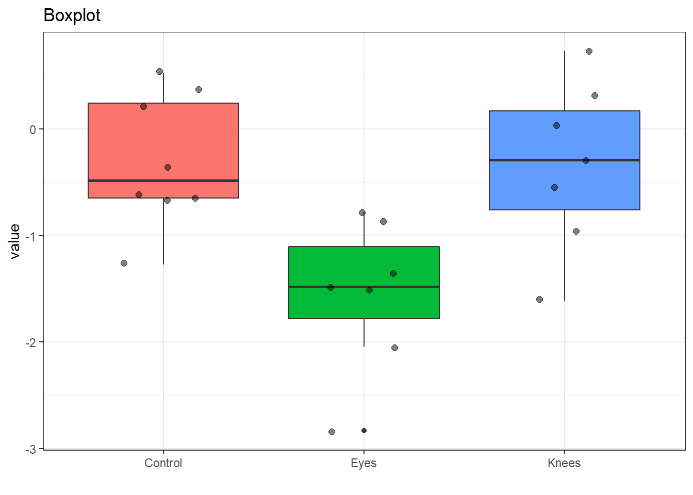
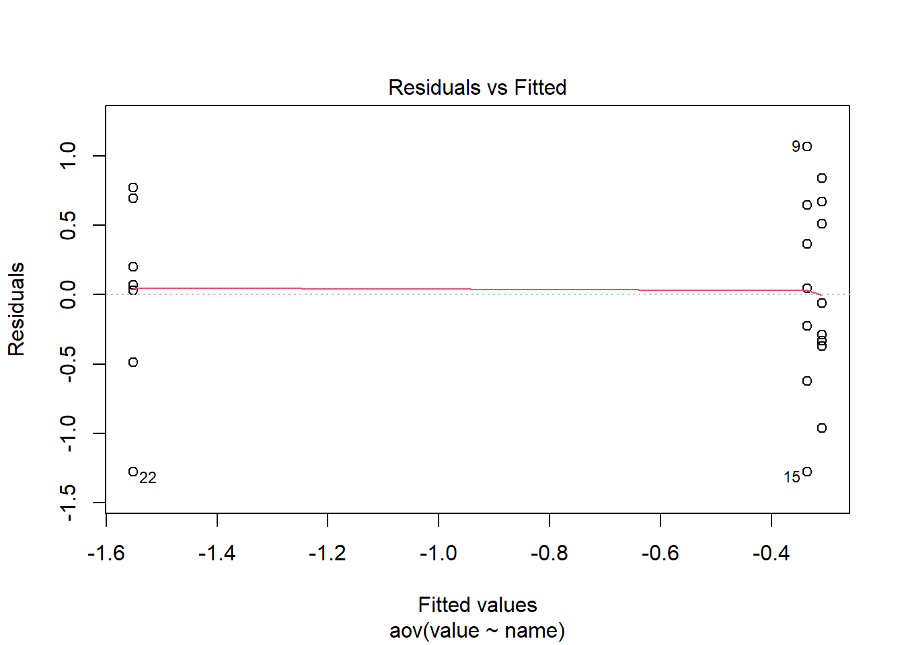
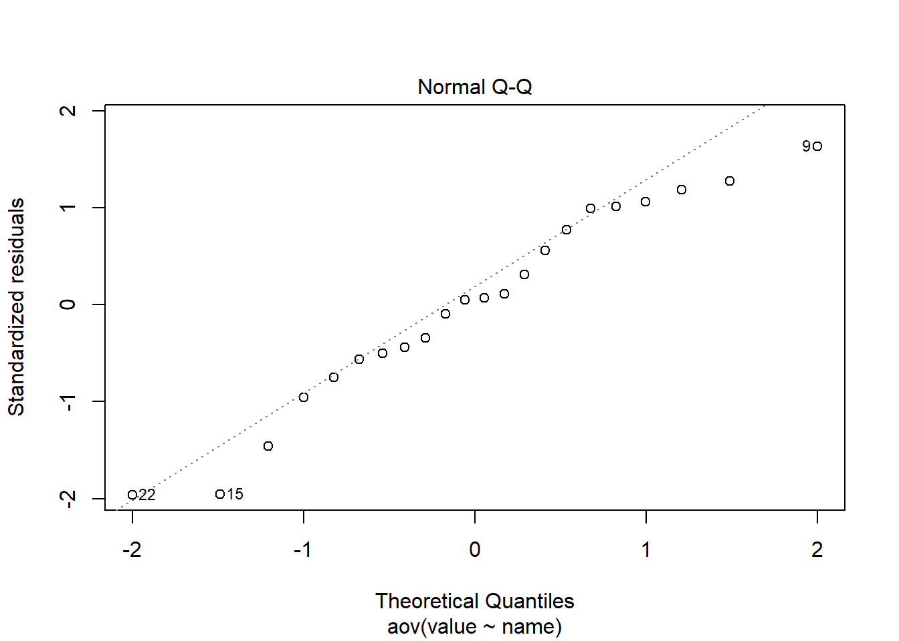
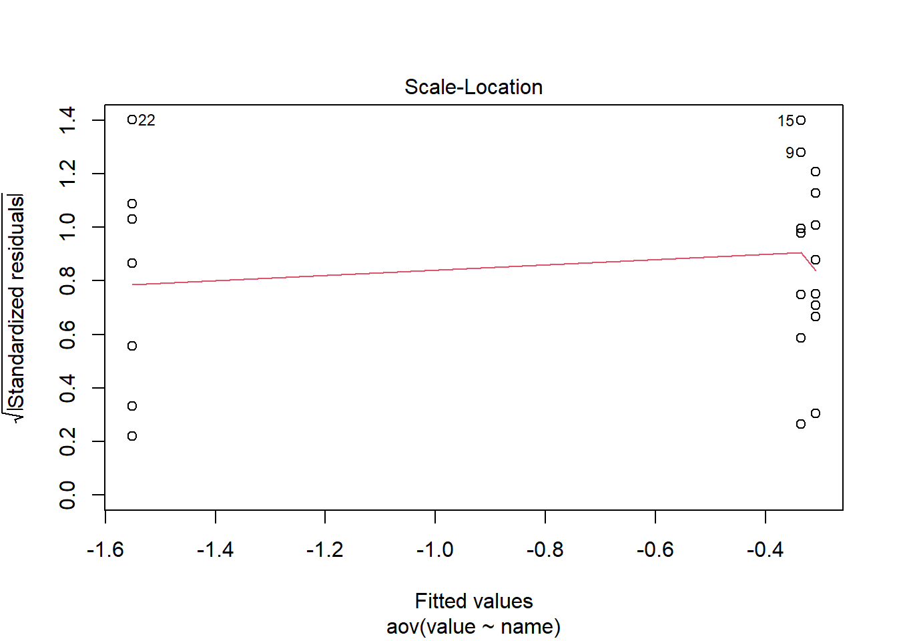
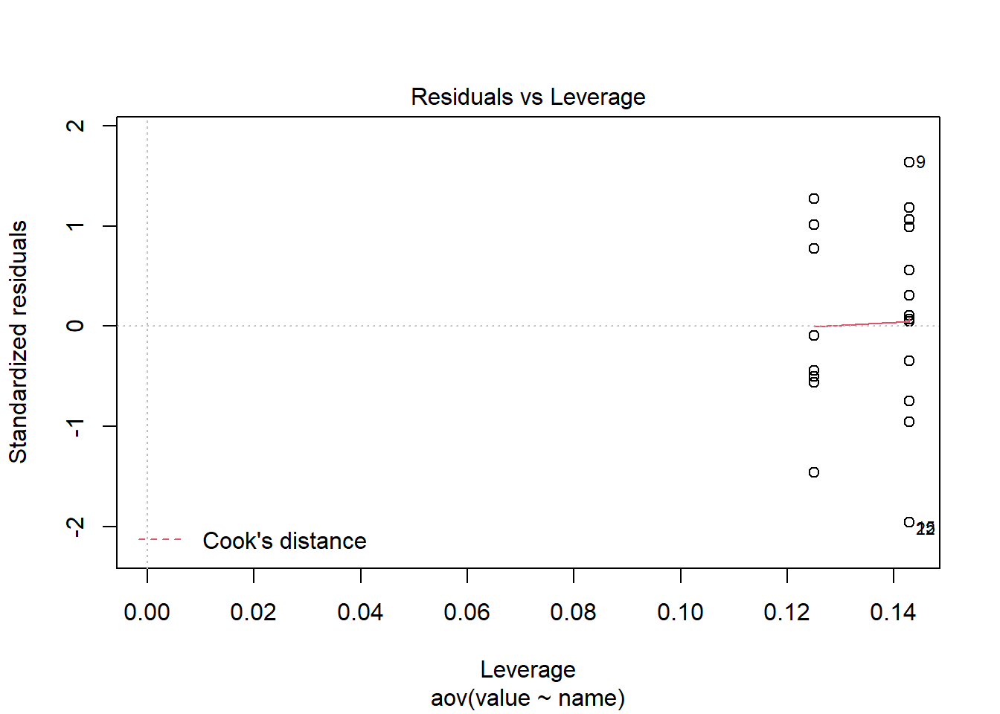

The goal of ANOVA is to compare the “within” group variability to the “between” variability of multiple samples of data for a response variable, with different categories.
Imagine the data represented as set of box plots:
Within variability: Within each region (think: individual box plot)
Between variability: Differences between box plots
More directly, ANOVA can be thought of comparing the means of multiple samples.
ANOVA vs. other methods
ANOVA is more flexible that the Student’s t test because it can used to compare the means among three or more groups.
It is a parametric test, and can be sensitive to P-hacking if care is not taken during experiment design or sampling.
Unlike a TukeyHSD tests, a significant P value of the ANOVA test indicates for at least one pair, between which the mean difference was statistically significant. *However, ANOVA will not specify which group, nor how many groups, presented a statistically significant difference.
Like simple linear regression, ANOVA uses a quantitative response variable. However, ANOVA uses a categorical predicting variable while SLR’s is quantitative. Essentially, ANOVA is a linear regression model where the predicting factor is a categorical variable. ANOVA uses dummy variables with categorial predictors. With multiple predictors, it’s a multiple linear regression.
ANOVA Assumptions:
Constant variance: The variance of the error terms is constant
Independence: The error terms are independent random variables
Normality: The error terms are normally distributed
Jet lag is a common problem for people traveling across multiple time zones, but people can gradually adjust to the new time zone since the exposure of the shifted light schedule to their eyes can resets the internal circadian rhythm in a process called “phase shift”. Campbell and Murphy (1998) in a highly controversial study reported that the human circadian clock can also be reset by only exposing the back of the knee to light, with some hailing this as a major discovery and others challenging aspects of the experimental design. The table below is taken from a later experiment by Wright and Czeisler (2002) that re-examined the phenomenon. The new experiment measured circadian rhythm through the daily cycle of melatonin production in 22 subjects randomly assigned to one of three light treatments. Subjects were woken from sleep and for three hours were exposed to bright lights applied to the eyes only, to the knees only or to neither (control group). The effects of treatment to the circadian rhythm were measured two days later by the magnitude of phase shift (measured in hours) in each subject’s daily cycle of melatonin production. A negative measurement indicates a delay in melatonin production, a predicted effect of light treatment, while a positive number indicates an advance.
Raw data of phase shift, in hours, for the circadian rhythm experiment.
Running an ANOVA data in R results in the following output. You can read the “treatments” as the “between” variability and the “error” as the “within” variability - the ratio between the two are then compared in the F-test.
Source
Df
Sum of Squares
Mean Squares
F-statistics
p-value
Treatments
2
7.2244
3.6122
7.29
0.004
Error
19
9.415
0.4955
TOTAL
21
16.6394
For reference, here is the same table with the parameters named.
Source
Df
Sum of Squares
Mean Squares
F-statistics
p-value
Treatments
(between)
\(k-1\)
\(SSTR\)
\(MSTR=\)
\(STR/ (k-1)\)
\(F= MSTR / MSE\)
*
Error
(within)
\(N-k\)
\(SSE\)
\(MSE = SSE / (N-k)\)
TOTAL
\(N-1\)
\(SST\)
Where:
k = 3 (number of groups)
N = 22 (number o data points)
Treatment Df = K-1 = 3-1 = 2
Error Df = N-k = 22 - 3 = 19
TOTAL Df = 2 and 19
SSTR = MSTR * Df = 3.6122 * 2 = 7.2244
MSE = SSE/Df = 9.415 / 19 = 0.4955
SST = SSE + SSTR = 7.2244 + 9.415 = 16.6394
F-statistic = MSTR/MSE = 3.6122 / 0.4955 = 7.29
Group Means
\(\mu_1\): estimated mean of the treatment group “control” = -0.31
\(\mu_2\): estimated mean of the treatment group “knees” = -0.36
\(\mu_3\): estimated mean of the treatment group “eyes” = -1.55
Null hypothesis of the ANOVA \(F\)-test, \(H_0\)
\(H_0\): All the means of treatment categories are the same.
Alternative hypothesis of the ANOVA \(F\)-test, \(H_A\)
\(H_A\): At least one pair of treatment categories have different means.
F-test, p-value, and results
The resulting p-value from the F-test \(F\)(k-1, N-k) or \(F_{(2,19)}\) is 0.004. At the level of \(\alpha\)-level of 0.05, we reject the null hypothesis, so at least 1 pair of the treatment groups’ means are likely different (statistically significant). However, without pairwise comparison, we do not know which pair(s) are different. Additional analysis is needed to evaluate the control group vs the knee and eye treatment groups.
R Code
Since the samples are different length, I use a quick trick of combining them into a single tibble with a “name” and “value” column.
# A tibble: 5 x 2
name value
<chr> <dbl>
1 Control 0.36
2 Control -0.68
3 Control 0.53
4 Knees -0.56
5 Eyes -1.48
With this done, we can quickly check the means.
data |>group_by(name) |> dplyr::summarise(n =n(), mean=mean(value), var =var(value))
# A tibble: 3 x 4
name n mean var
<chr> <int> <dbl> <dbl>
1 Control 8 -0.309 0.381
2 Eyes 7 -1.55 0.499
3 Knees 7 -0.336 0.625
Make a quick boxplot using ggplot.
data |>ggplot(aes(x=name, y=value, fill = name))+geom_boxplot()+geom_jitter(size=2, alpha =0.5,width =0.2)+theme_bw() +theme(legend.position="none", ) +labs(title ="Boxplot",x ="" )

And finally run ANOVA.
aov_model <-aov(value~name, data = data)aov_model
Call:
aov(formula = value ~ name, data = data)
Terms:
name Residuals
Sum of Squares 7.224492 9.415345
Deg. of Freedom 2 19
Residual standard error: 0.7039492
Estimated effects may be unbalanced
aov_model |>summary()
Df Sum Sq Mean Sq F value Pr(>F)
name 2 7.224 3.612 7.289 0.00447 **
Residuals 19 9.415 0.496
---
Signif. codes: 0 '***' 0.001 '**' 0.01 '*' 0.05 '.' 0.1 ' ' 1
Checking the fit of the model, we see that all three assumptions hold, but note there are a few points identified as possible outliers.
plot(aov_model)




Remember, ANOVA doesn’t tell us which pair is different, only if a pair exists with statistically different means.
We can use TukeyHSD to identify which groups are different to the others through pair-wise comparison. Eyes is determined to have a mean that is statistically different than the Control and Knees groups while the Control and Knees groups do not statistically different means.
TukeyHSD(aov_model)
Tukey multiple comparisons of means
95% family-wise confidence level
Fit: aov(formula = value ~ name, data = data)
$name
diff lwr upr p adj
Eyes-Control -1.24267857 -2.1682364 -0.3171207 0.0078656
Knees-Control -0.02696429 -0.9525222 0.8985936 0.9969851
Knees-Eyes 1.21571429 0.2598022 2.1716263 0.0116776